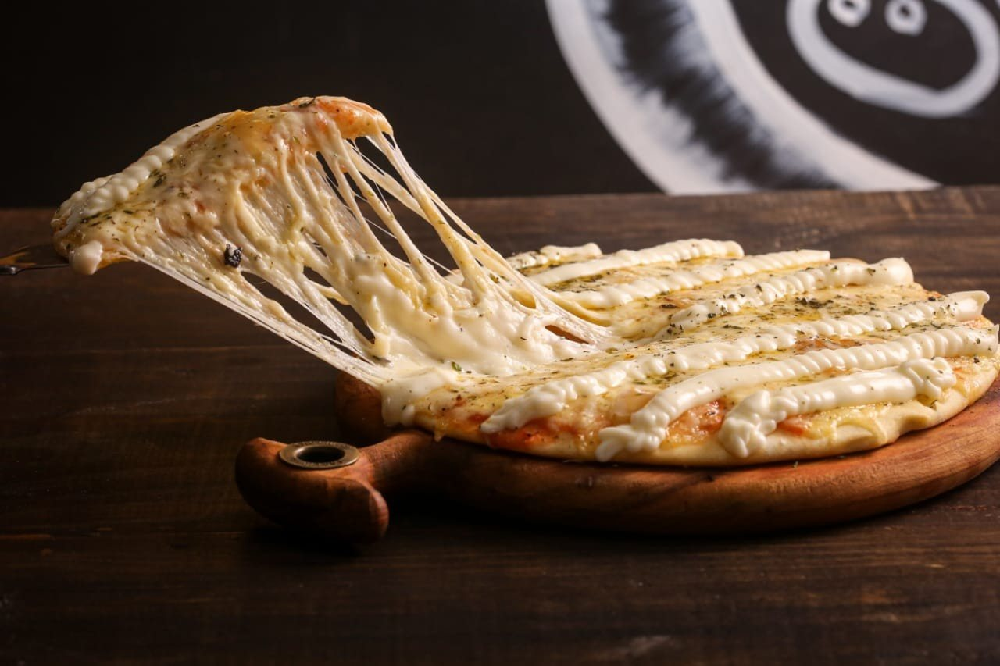

Premium
Carne de Sol com Queijo Coalho
Carne de sol desfiada, queijo coalho grelhado e um toque de cebola caramelizada levemente apimentada. Premium, a partir de R$ 42.
Desde 2014 Delivery e retirada · Brotas, Salvador
Pizza de massa artesanal em quatro tamanhos, da pequena de 4 fatias à família de 12. São 54 sabores, das tradicionais à Nordestina com carne seca e banana frita, mais calzones, combos e borda vulcão.

Por onde começar
Toque em “+” e a sacola soma. A mensagem sai pronta para o WhatsApp da casa.
Montar o pedidoCombosPizza com refri, com borda, com batata ou com uma pequena doce.
Ver os combosOnde entregamosDigite o seu bairro e veja se ele está na lista de entrega.
Procurar meu bairroComo pedir sem appPagamento, horários, pontos e cupons, tudo explicado.
Ver como funciona
O sabor que leva o nome
Frango, bacon, cream cheese, barbecue e pimenta biquinho sobre mussarela. É o sabor premium que leva o nome da casa, da pequena de 4 fatias (R$ 42) à família de 12 (R$ 97).
No cardápio, o molho da pizza de atum aparece como “molho caseiro oliks”, e a massa é descrita como “massa artesanal, base molho de tomate especial”.
Com sotaque
Os sabores que fazem a Oliks parecer daqui. Todos nos quatro tamanhos.
Carne de sol desfiada, queijo coalho grelhado e um toque de cebola caramelizada levemente apimentada. Premium, a partir de R$ 42.

Carne seca com banana frita e catupiry; charque com pimentão; carne seca com cream cheese e pimenta biquinho. Especiais, a partir de R$ 37.
Camarão, alho-poró, catupiry e pimenta biquinho sobre mussarela. Também em calzone grande (R$ 86).
A semana da Oliks
O dia de hoje fica marcado. Na segunda, quem pede pizza G ou F escolhe um broto doce de presente, como mostra a categoria “Segunda do Broto Doce Grátis” do cardápio.
Horários do cardápio digital e da ficha do Google, iguais nas duas fontes em 01/10/2026. Cupom “7% OFF” automático no cardápio digital de quarta a segunda, até 31/12/2026.
Onde entregamos
A Oliks fica na R. 19 de Maio, em Brotas, no meio do caminho entre o Centro, a orla e o Cabula. Digite o seu bairro: a lista é a do cardápio digital da casa.
Desenho aproximado dos arredores, sem escala.
86 bairros na lista de entrega do cardápio da casa.
Monte seu pedido
A sacola soma o total e a mensagem chega organizada no WhatsApp da Oliks, sem comissão de aplicativo.
Preços na Grande 8 fatias. Pizza com mais de um sabor sai pelo preço do sabor mais caro. Com sabores diferentes, escreva a divisão na mensagem.
Quem já pediu
Adorei a pizza! A massa estava no ponto certo, o molho muito saboroso e o recheio generoso. Chegou bem embalada e ainda quentinha. Atendimento excelente e entrega rápida. Recomendo!
Excelente como sempre saborosa tamanho adequado rapidez da entrega nota 10
Comi pela primeira vez e, com certeza, farei mais vezes.
Trechos de avaliações públicas da ficha da Oliks no Google, lidos em 01/10/2026, com o nome abreviado.
Galeria
Fotos que a própria casa publica. No Instagram @olikspizzaria saíram seis posts só entre 23/09 e 01/10/2026.
Como pedir
“…que pode ser trocado por recompensas.” Além dos cupons automáticos “7% OFF” (até 31/12/2026) e “Preferido”, de 5%, das 17h15 às 21h.
Dúvidas frequentes
Não. A Oliks trabalha com entrega e retirada: o cardápio digital da casa não tem consumo no local.
Segunda, quarta e quinta, das 17h30 às 23h; sexta, sábado e domingo, das 17h30 às 23h45. Às terças a casa fecha.
A lista do cardápio digital tem 86 bairros, de Brotas à orla, ao Centro e ao Cabula. Procure o seu na página “Onde entregamos”. A taxa depende do bairro e é informada no pedido.
Sim. A média aceita até 2 sabores e a grande e a família, até 3. A pizza sai pelo preço do sabor mais caro.
Pix, cartão de crédito, cartão de débito, vale-refeição ou dinheiro, conforme o cardápio digital da casa.
Sim. A retirada é na R. 19 de Maio, 131, em Brotas. Avise no pedido que vai buscar.
Bateu a fome?
De quarta a segunda, a partir das 17h30. Monte o pedido no site ou chame direto no WhatsApp da casa.